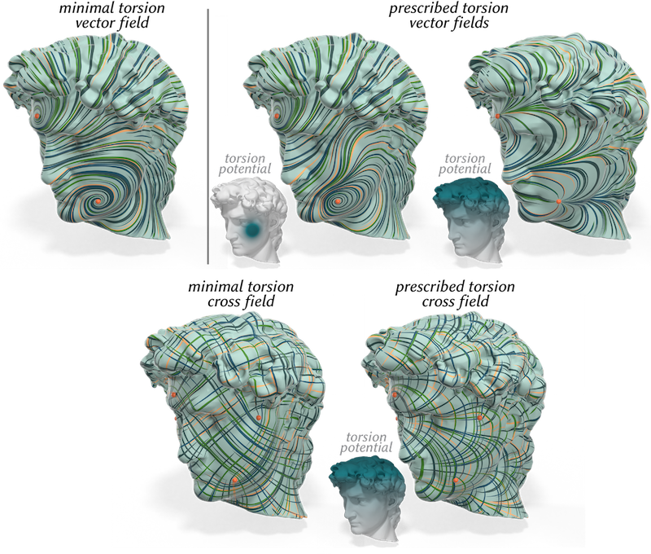

Discrete Torsion of Connection Forms on Simplicial Meshes
While discrete (metric) connections have become a staple of n-vector field design and analysis on simplicial meshes, the notion of torsion of a discrete connection has remained unstudied. This is all the more surprising as torsion is a crucial component in the fundamental theorem of Riemannian geometry, which introduces the existence and uniqueness of the Levi-Civita connection induced by the metric. In this paper, we extend the existing geometry processing toolbox by providing torsion control over discrete connections. Our approach consists in first introducing a new discrete Levi-Civita connection for a metric with locally-constant curvature to replace the hinge connection of a triangle mesh whose curvature is concentrated at singularities; from this reference connection, we define the discrete torsion of a connection to be the discrete dual 1-form by which a connection deviates from our discrete Levi-Civita connection. We discuss how the curvature and torsion of a discrete connection can then be controlled and assigned in a manner consistent with the continuous case. We also illustrate our approach through theoretical analysis and practical examples arising in vector and frame design.
Paper
Supplemental Documents
Spherical Trivial Connections
The smooth formulation of torsion which we use allows us to derive closed form expressions for trivial connections with prescribed singularities on smooth surfaces. In Appendix C we derive an analytic expression for minimal-torsion trivial connections on the sphere. Our closed-form expressions can even be used to render these vector fields directly in a shader (see the example on ShaderToy for more details).
Selected Figures
The connection Laplacian used in the vector heat method of Sharp et al [2019] can be formed for any connection. In this example, we compute a logarithmic map—a sort of global polar parameterization—using the connection Laplacian of an ordinary torsion-free connection (left), and using a connection with prescribed non-zero torsion equal to the gradient of a torsion potential (right), which introduces a distinct twist into the radial lines of the parameterization.

Here we explore the impact of torsion on vector field design: a parallel vector field for a minimal-torsion trivial connection with prescribed singularities is shown on the left, while parallel fields for trivial connections with additional gradient components in their torsion are shown in the center, along with the prescribed scalar potentials. A compact potential changes the field locally, while a globally-supported potential causes larger-scale changes (top right). Torsion can also be incorporated into the design of n-vector fields such as cross fields (bottom).
Just as the ordinary Laplacian measures the smoothness of scalar functions, the connection Laplacian defines a notion of smoothness for vector fields. Computing an optimal vector field in the sense of Knoppel et al. [2013] using the discrete Levi-Civita connection to build the connection Laplacian yields a field whose streamlines are as straight as possible in 3D space (top), whereas using a connection with a nontrivial torsion (here, the gradient of a potential) introduces twists into the streamlines (bottom).
Bibtex
@article{Braune:2025:DTC,
author = {Braune, Theo and Gillespie, Mark and Tong, Yiying and Desbrun, Mathieu},
title = {Discrete Torsion of Connection Forms on Simplicial Meshes},
journal = {ACM Trans. Graph.},
volume = {44},
number = {4},
year = {2025},
publisher = {ACM},
address = {New York, NY, USA},
url = {https://doi.org/10.1145/3731197},
doi = {10.1145/3731197},
month = {aug},
}
Acknowledgements
The first author was supported by an IP Paris graduate fellowship and a Monge complement from Ecole Polytechnique. The last author benefited from the generous support of the MediTwin consortium (funded by the French government as part of France 2030), Ansys, and of an Inria chair.